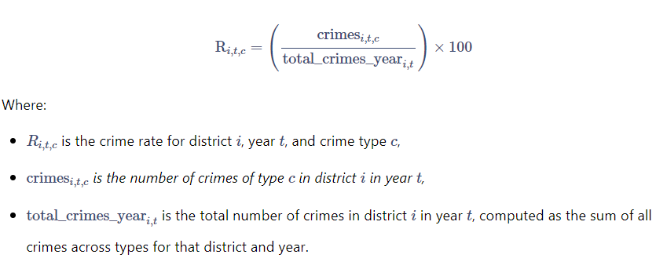
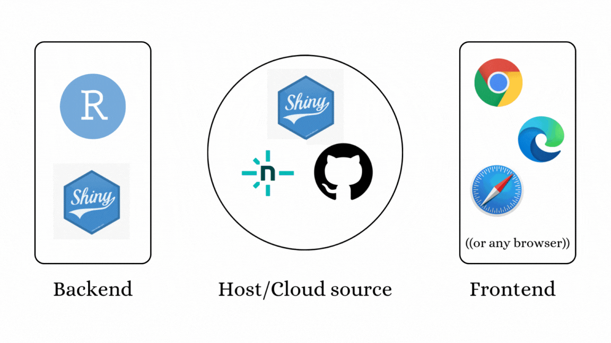

William Tan Juin Wei, Marcus Jaeson Yeo, Santhya Thirumarai Selvan
Published
October 1, 2024
Modified
November 24, 2024
Geo-PEACE
Background
Singaporeans often take their homeland’s low crime rate for granted, carrying this perception when traveling abroad. Malaysia, a popular destination due to its proximity and affordability, offers many conveniences. However, assuming the same level of safety as in Singapore can lead to unwise decisions.
This project seeks to enhance awareness of crime and safety issues in Malaysia, helping tourists better assess travel risks. We are employing techniques such as Exploratory Data Analysis(EDA), Spatial Weights Analysis (SWA) and various ClusteringAnalyses, to identify trends crime hotspots and cold spots. This project aims to offer travelers more informed guidance when selecting destinations within Malaysia.
Project Objectives
Visualisation: Develop highly-readable maps and plots to explore spatial trends related to crime and its sub-types within the study area
Clustering: Implement hierarchical clustering, ClustGeo and SKATER clustering analyses to investigate spatial distribution of crime in Malaysia
Interactivity: Enable dynamic selection of parameters (year, region, clustering settings, etc.) and other user-friendly feature using Shiny
Datasets
Crime Rates working data: Aspatial Data that covers specifics of the crimes committed in the various states.
To examine patterns in property crimes in Selangor, Kuala Lumpur and Putrajaya from 2015-2020
To understand the evolution and dynamics of property crimes
To better understand the effects of the National Transformation Programme
Geospatial and Aspatial Data:
Study areas (Geospatial data) were methodically chosen for their wealth, geopolitical landscape and vibrant city life and attractions. More specifically, the study makes use of the Police Station boundaries in these states.
Property Crime incidents and their spatial characteristics served as the aspatial data for the study.
Methods Deployed:
Global Measure of Spatial Autocorrelation: Global Moran I’s Statistic
Local Measure of Spatial Autocorrelation & Hot spot analysis: Getis-Ord Gi* Statistic
Learnings and Takeaways:
Instead of deploying a wide range of different measures, the study deployed these two methods using different categories (By year, By Location) to gain a more comprehensive understanding of crimes of the this nature
Using Police/Jurisdical boundaries to examine crime events is very appropriate and will be useful when chaneling efforts to lower crime rates
Approach and Methodology
The approach centers on the district-level analysis of both regions of Malaysia, East and West (Peninsular) Malaysia. The project begins with data wrangling to resolve discrepancies between the datasets, followed by EDA to understand the big picture of crime distribution in Peninsular and East Malaysia. Additionall, deriving crime rate figures rather than using crime absolute crime figures provided in the crime dataset helps
Key details include:
Exploratory Data Analysis (EDA)
Barchart, Box-plots, Histograms
Plotting choropleth maps to reflect the spatial distribution of crimes in Malaysia
Crime rate calculation
Crime rate\(R_{i,t,c}\) for district \(i\) year \(t\), and crime type \(c\) is then computed as the proportion of crimes of type \(c\) in district \(i\) relative to the total crimes in the same district and year, expressed as a percentage:

Thus, each crime rate figure corresponds to the proportion of a specific crime type relative to the total crimes reported in that district for the given year.
In practice, the crime rate for each district and year is calculated using the following R code:
Code
crime_merged <- crime_merged %>%mutate(year =as.integer(format(as.Date(date.y), "%Y")), .before=11)# Calculate crime ratecrime_merged <- crime_merged %>%group_by(ADM1_EN, ADM2_EN, year) %>%# Group by district and yearmutate(total_crimes_year =sum(crimes), # Calculate total crimes per district per yearcrime_rate = (crimes / total_crimes_year) *100, .before=13) %>%# Calculate crime rate for each rowungroup() %>%select(-total_crimes_year) %>%select (-c(2,4,5,8))
Global and Local Spatial Autocorrelation (SWA)
Global: Make use of measures such as Moran I’s to determine if the spatial patterns of the crime events are clustered, randomly distributed, or show a pattern of dispersion.
Local: Make use of measures such as Local Moran I’s and Getis-Ord Gi* statistic to identify cold and/or hotspot areas for crime events in our study area.
Clustering Analysis
Deploy Hierarchical Clustering, SKATER Approach and ClustGeo to observe for any natural clustering of spatial units based on the crime rates.
Mapping our results and Interpretation
Conclusion
Application System Architecture

R packages Used:
shiny: For building the interactive web application.
ggplot2: For creating bar charts, histograms, and boxplots.
dplyr: For data manipulation and filtering.
sf: For handling spatial data.
tmap: For map visualization.
spdep: For spatial dependence analysis and creating neighbors lists.
skater-helper: A custom helper script for running spatial clustering with SKATER.